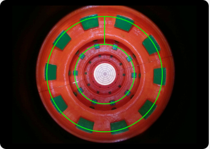

Hello from MOIL LAB¶
This is tutorial how create documentation using Sphinx
Install Package¶
before using first you need to install package
open terminal
create environtment python and activate that venv
type this for installing package pip install sphinx
create folder location * you can clone from repository or create new folder by your self
create folder for specific documentation inside main folder
open that directory
type this command sphinx-quickstart
fill specific exstention you want
for testing first time you can type this command make html
from this doc go to build and html and open index.html
your documentation will show on your browser
Change theme from third party¶
This part will explain how to change theme become read the doc theme
install package pip install sphinx_rtd_theme
open file conf.py
add import sphinx_rtd_theme
change ‘alabastar’ to ‘sphinx_rtd_theme’
Python Code¶
open cont.py and change directory to location off src code relative with source
you can create file .rst from your package
open your terminal in doc directory and type this command sphinx-apidoc -o <location for save rst> <location of your source code>
after finish all off your file in src code will become .rst
you can henerate by typing make html
you can also create structure by using that file
Add external link¶
you can add link for referenc or connect to another page
you type like this
.. _a link: https://docutils.sourceforge.io/docs/ref/rst/directives.html#image
and you just need call that command with the name a link
This is a paragraph that contains a link.
Add Image from Directory¶

Select photo
type this command .. image:: image.jpg
fill the image.jpg with location off image relative by source directory
This is a paragraph that contains a link.
Add Video from youtube¶
this video i get from youtube from Dan Sheffner
you can type .. raw:: html and
select link video format Embed Video
Add Warning and other¶
- this section will give you info for user
you can using
you only need to type .. warning::
another option
“attention”, “caution”, “danger”, “error”, “hint”, “important”, “note”, “tip”, “warning”, “admonition”
Warning
warning! make sure everything work or contact me
Note
please be kind